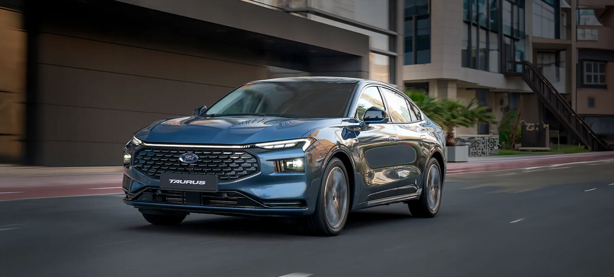

فورد توريس || موديل 2025 || فئة التيتانيوم
فورد تورس هي سيارة سيدان متوسطة إلى كبيرة الحجم تتميز بتصميم عصري ورياضي
وتكنولوجيا متقدمة، ومقصورة داخلية مريحة وواسعة. تتوفر بخيارات محركات متنوعة
مواصفات المحرك
| سعة المحرك (لتر) |
نوع المحرك |
أقصى قوة |
العزم |
استهلاك الوقود |
| 2 لتر |
2000cc ||سلندر 4 |
232 حصان |
388 نيوتن |
15.4 كلم/لتر |
المواصفات الداخلية والتجهيزات
- تأتي بمقدمة كبيرة مع شبك أمامي واسع ومصابيح LED نهارية


- تتوفر بعجلات قياس 17 بوصة، مما يضيف لمسة جمالية وأداءً متميزًا.
- تشغيل عن بعد
- تشغيل ذكي
- مقاعد جلد وشامواه
- مقعد السائق والراكب كهربائي
- زجاج كهربائي أوتو لمسة واحدة
- مرايا داخلية تعتيم
- جلنط كهربائي
- إضاءة بانورامية داخلية
- كاميرا خلفية
- شاحن لاسلكي
- مكيف بتحكم منفصل للسائق والراكب
- تكاية خلفية
- منفذ USB خلفي


انظمة الأمان
- فرامل ABS
- نظام الثبات الإلكتروني
- حساس كفرات
- وسائد هوائية أمامية وجانبية
- تنبيه الخروج عن المسار
- تنبيه ما قبل الاصطدام
- نظام مراقبة النقطة العمياء
أبرز العيوب والمشاكل التي ذكرها مستخدمون حقيقيون
- غياب الحساسات الأمامية وكاميرا 360 رغم وجود شاشة عرض كبيرة
- غياب مزايا مثل التشغيل عن بعد وتبريد المقاعد رغم المواصفات المرتقبة
- اهتزاز وصوت معدني عند سرعات دوران المحرك المنخفضة في المحرك التوربيني ثلاثي الأسطوانات
مشاكل عامة شائعة تشمل
- تسرب زيت من طنجرة الزيت
- مشاكل في المحرك مثل تأخر التشغيل أو دخان أبيض
- ارتفاع في حرارة المحرك